О патче
Перезагрузка
Всем привет! Патч 1.8 представляет собой откат до исходных патчей с минимальными изменениями, Начинаем с бафа снайперов заканчивая изменением командных ботов.
Дисклеймер: Внесенные изменения могут иметь непредвиденные эффекты. Если столкнётесь с одним из таких — репортите в канал баланса или на Discord GAF.
Баланс-команда: llN, Angel, Aiverse
Баланс патч 1.8 «Перезагрузка»
Ребаланс
Откат к базовому балансу с точечными правками: баф снайперов ,ребаланс T2 танков, изменения ACU, зданий, морских и воздушных юнитов. Всё ниже по списку!
БМК (ACU)
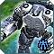 БМК ОФЗ (GAF-версия)
Бафф
Изменены апгрейды: добавлен новый ган и щит с постоянной регенерацией.
-
Новый апгрейд гана
-
Новый апгрейд щита (постоянная регенерация, как нано-репеир)
Фикс
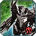 БМК Кибран
Ребаланс
Изменены апгрейды: улучшение экономического апгрейда перенесено на левую руку.
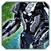 БМК Эон
Ребаланс
Изменены апгрейды: хроно-демпфер, щит перенесён на левую руку, исправлен баг с щитом.
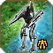 Саку
Бафф
Усилены и добавлены тяжёлый рембо и диверсионный рембо пресеты.
- ОФЗ: Терминатор (тяж), Патриот (диверс)
- Кибран: Каракал (тяж), Скиталец (диверс)
- Эон: Инквизитор (тяж), Странник (диверс)
- Серафим: Ита-Хас (тяж), Тал-Восса (диверс)
Наземные юниты
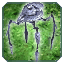 Снайпер Эон
Бафф
Бафф снайпера.
-
Изменения
- Энергия:
13500 17500нерф
- Масса:
700 1000Нёрф
- Время постройки:
4000 4500Нёрф
- Урон:
950 1000бафф
- Ускорена анимация стрельбыбафф
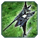 Снайпер Серафим
Бафф
Бафф снайпера.
-
Изменения
- Энергия:
14000 18500Нёрф
- Масса:
780 1150Нёрф
- Время постройки:
4300 4800Нёрф
- Урон (обычный):
580 700бафф
- Урон (снайперский):
2000 780 ×3бафф
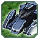 Обсидиан (GAF-версия)
Ребаланс
Ребаланс T2 танка.
-
Изменения
- Здоровье:
1250 700 Нёрф
- Прочность щита:
1500 1750 Бафф
- Потребление щита:
10 4 Бафф
- Скорость:
2.6 2.7 Бафф
- Урон:
360 320 Нёрф
- Дальность:
20 24 Бафф
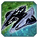 Дезинтегратор щитов (GAF-версия)
Ребаланс
GAF-версия юнита.
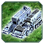 Острие (GAF-версия)
Ребаланс
GAF-версия юнита.
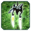 Селен (GAF-версия)
Ребаланс
GAF-версия юнита.
Здания
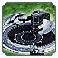 HQ модели
Фикс
Изменены модели HQ для Эон и Кибран.
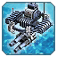 Торпедные установки
Бафф
-
ОФЗ
- Скорость строительства:
1446 1400 Бафф
- Прочность:
6400 12800 Бафф
-
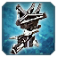 Кибран
- Скорость строительства:
1446 1400 Бафф
- Прочность:
5800 11600 Бафф
-
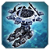 Эон
- Скорость строительства:
1446 1400 Бафф
- Прочность:
6100 12200 Бафф
-
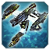 Серафим
- Скорость строительства:
1446 1400 Бафф
- Прочность:
4800 9600 Бафф
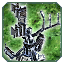 Щит генераторы
Ребаланс
Ребаланс щит генераторов.
Щит-генераторы
- ОФЗ T3:
1700 19000 Бафф
-
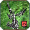 Ребаланс стоимости ED структур
Кибран T2, T3
- ED2 масса:
460 400 Бафф
- ED3 масса:
1260 1000 Бафф
- ED4 масса:
2400 1800 | щит: 13000 15000 Бафф
- ED5 масса:
4260 3000 Бафф
- Эон T3 размер щита:
35 36 Бафф
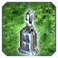 Инженерные станции
Бафф
Псарня
- Масса дрона:
100 50 Бафф
- Энергия дрона:
1000 500 Бафф
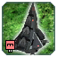 Улей
- Скорость сборки:
42 55 Бафф
- Скорость постройки:
1171 1000 Бафф
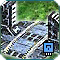 Врата (GAF-версия)
GAF-версия.
Морские юниты
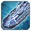 Атлантис (GAF-версия)
Ребаланс
GAF-версия.
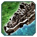Кибран морские юниты
Ребаланс
Откат до старой версии.
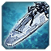Эон морские юниты (GAF-версия)
Ребаланс
Откат до старой версии.
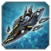Серафим морские юниты
Ребаланс
Откат до старой версии.
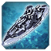Missile Ship
Фикс
Баг-фикс.
Воздушные юниты
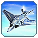 АСФ
Ребаланс
GAF-версия.
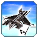ASF Кибран
Ребаланс
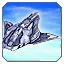Swift Wind (GAF-версия)
Ребаланс
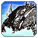Soul Ripper (GAF-версия)
Ребаланс